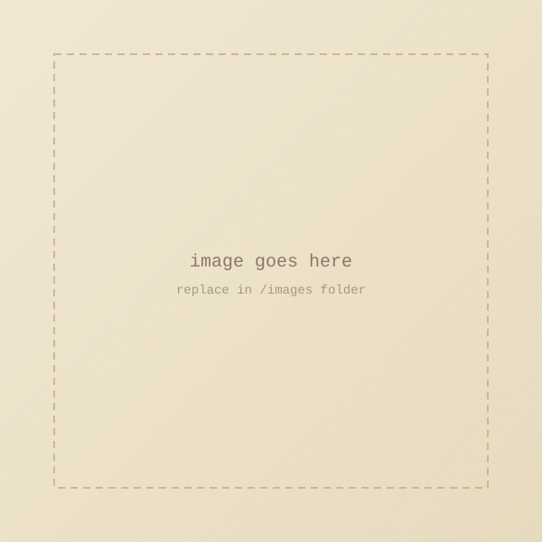

L'automne dans sa tourbière dorée
November 12, 2025
L'automne dans sa tourbière dorée
Ensevelit un à un les moments de l'année
Seuls quelques-uns inévitablement déteints
Virevoltent encore sur les chemins.
· · ·
Context & Notes
A few words about where this poem came from, or what it means to you.
Comments
If this poem stirred something in you, share a thought below.